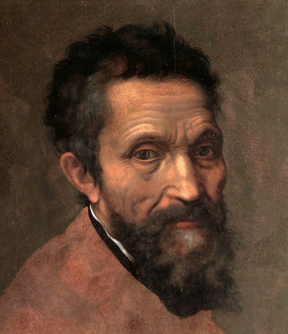
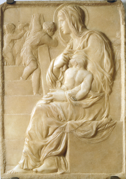
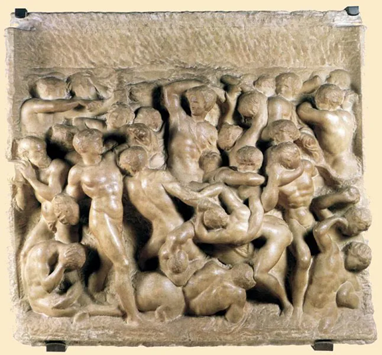
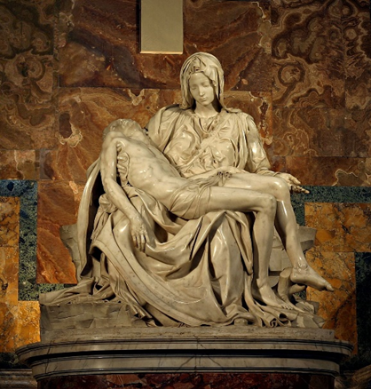
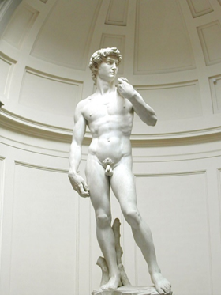
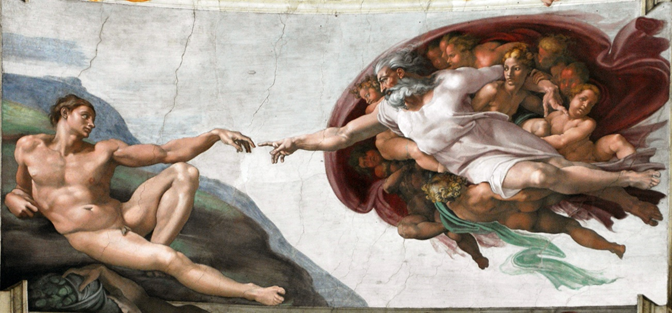
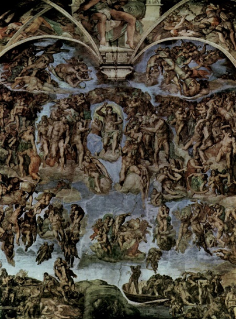
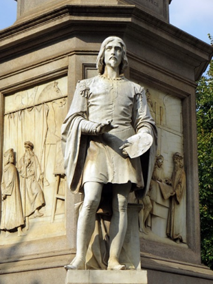
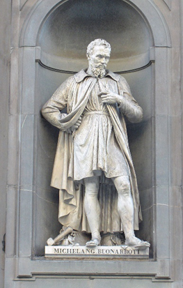
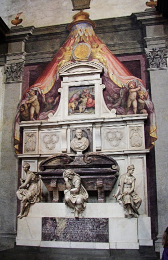

Микеланджело ди Лудовико Буонароти Симони е италиански ренесансов скулптор, художник, поет и архитект. Той е един от титаните на Ренесансовото изкуство заедно с Леонардо да Винчи и Рафаело.
фиг. 1 Портрет на Микеланджело
Микеланджело е роден на 6 март 1475г. в Капрезе, селище край Арецо в Тоскана. Няколко месеца след раждането му семейството се установява във Флоренция. По-късно, след като майка му се разболява и умира през 1481г., заминава при дойката си и нейния съпруг в градчето Сетиняно. Още в ранна възраст Микеланджело започва да учи граматика при флорентическия хуманист Франческо да Урбино, но се интересува предимно от изкуство. На тринайсет години става чирак на художника Доменико Гирландайо. През 1489г. е един от двамата избрани ученици, който заминават при Лоренцо де Медичи, владетел на Флоренция. Там учи в академията от 1490 до 1492г. През това време създава релефите „Мадоната на стълбите“ и „Битката на кентаврите“.
фиг. 2 „Мадоната на стълбите“, в музей „Каза Буонароти“във Флоренция
фиг. 3 Барелефът „Битката на кентаврите“
През ноември 1497 г. френският посланик при Светия престол му поръчва една от неговите най-известни творби, „Пиета“. Изобразява Дева Мария оплакваща смъртта на Христос.
фиг. 4 „Пиета“, 1498 – 1499 г. Базилика „Свети Петър“, Рим
Връща се във Флоренция около 1501г., защото една от градските гилдии му поръчва да довърши монументалната статуя на Давид, започната 40 години по-рано от Агостино ди Дучо. Тя е символ на флорентинската свобода и е изработен изцяло от мрамор.
фиг. 5 Статуя на „Давид“ Флоренция
фиг. 6 „Сътворението на Адам“ Сикстинска капела, Рим
През септември 1534г. се установява в Рим, където остава до края на дните си. Там създава творбата „Страшния съд“ за олтара на Сикстинската капела, официално открита на 31 октомври 1541г.
фиг. 7 „Страшният съд“ Сикстинска капела, Рим
фиг. 8 Статуя на Микеланджело във Флоренция
фиг. 9 Статуя на Микеланджело пред галерия „Уфици“ Флоренция
Микеланджело умира в Рим на 88 години на 18 февруари 1564г. По негово желание тялото му е върнато във Флоренция, където е погребано в базиликата „Свети Кръст“.
фиг. 10 Гробът му в базиликата „Св. Кръст“